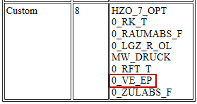
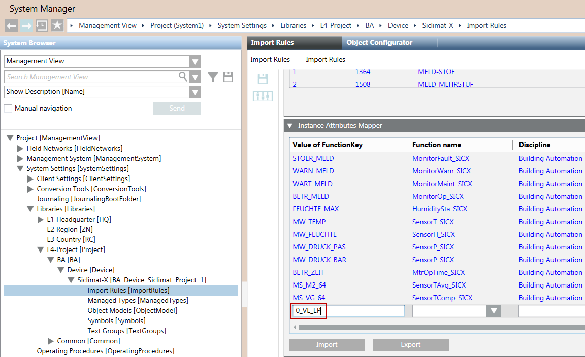

Mapping Custom SICLIMAT X Graphics to Management Platform Graphics
- You have exported graphics from SICLIMAT X.
- Check the System Information Report for custom graphics. For example, 0_VE_EP is a custom graphic.

- If there is no equivalent Desigo CC graphic to the custom graphic, create a function and the corresponding symbol for the custom graphic.
- In System Browser, select Management View.
- Select Project > System Settings > Libraries > [L4-Project] > BA > Device > Siclimat X > Import Rules.
- In the Import Rules tab, open the Instance Attributes Mapper expander.
- Click Add to add a new row.
- In the Value of Function Key field, enter the name of the custom graphic, for example 0_VE_EP.

- In the Function name field, select the function you want to map to the custom graphic.
- In the Discipline, Subdiscipline, Type, and Subtype fields, select the desired entries.
- Click Save.